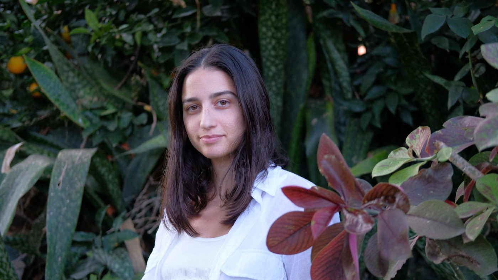

5.3

נעים מאוד, אני יובל
הקמתי את "אדמורה" מתוך הבנה עמוקה שלנשים מגיע מרחב שהוא רק שלהן. מקום שבו אפשר לעצור את המירוץ, לנשום, ולהרגיש שמבינים אותך באמת, בלי שיפוטיות.
אני מביאה איתי ידע וכלים מעולמות הרפואה הטבעית, אבל יותר מכל — אני מביאה את הלב והאמונה שריפוי אמיתי מתחיל בהקשבה. המטרה שלי היא לתת לך את הכלים והתמיכה כדי שתמצאי מחדש את הכוח, השקט והשמחה שלך.